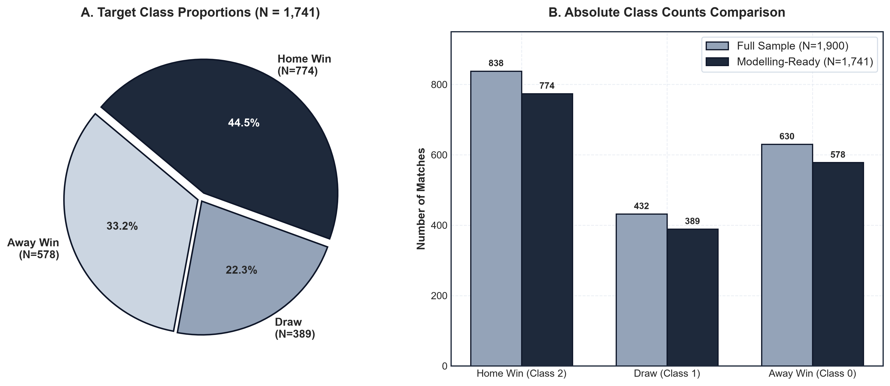
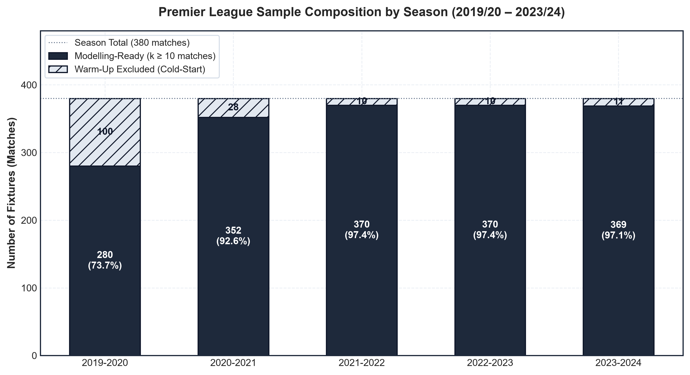
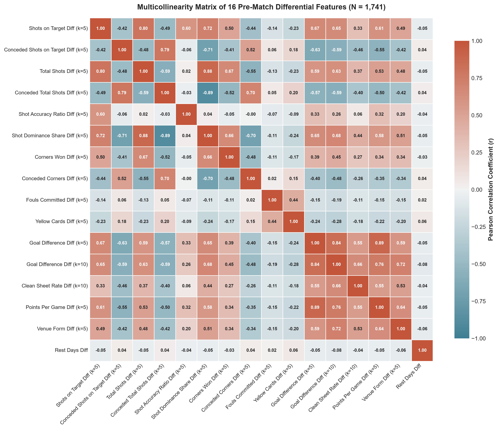
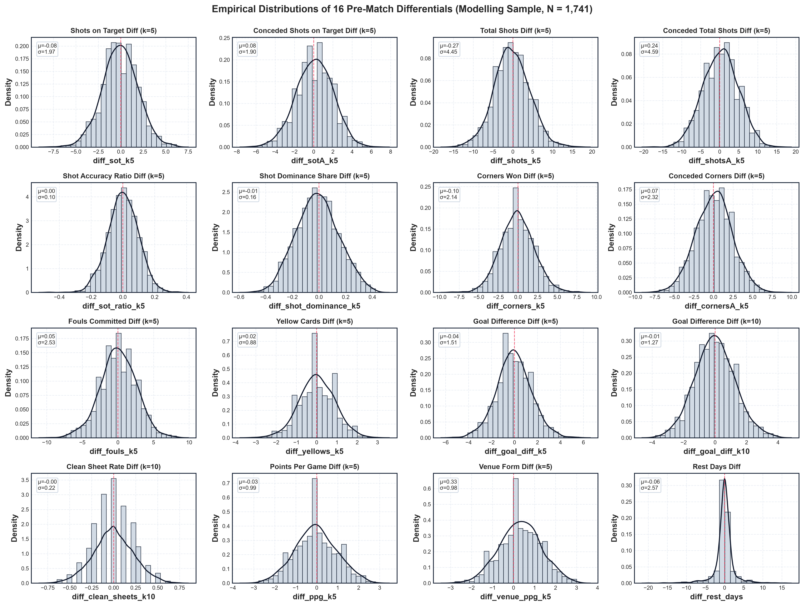
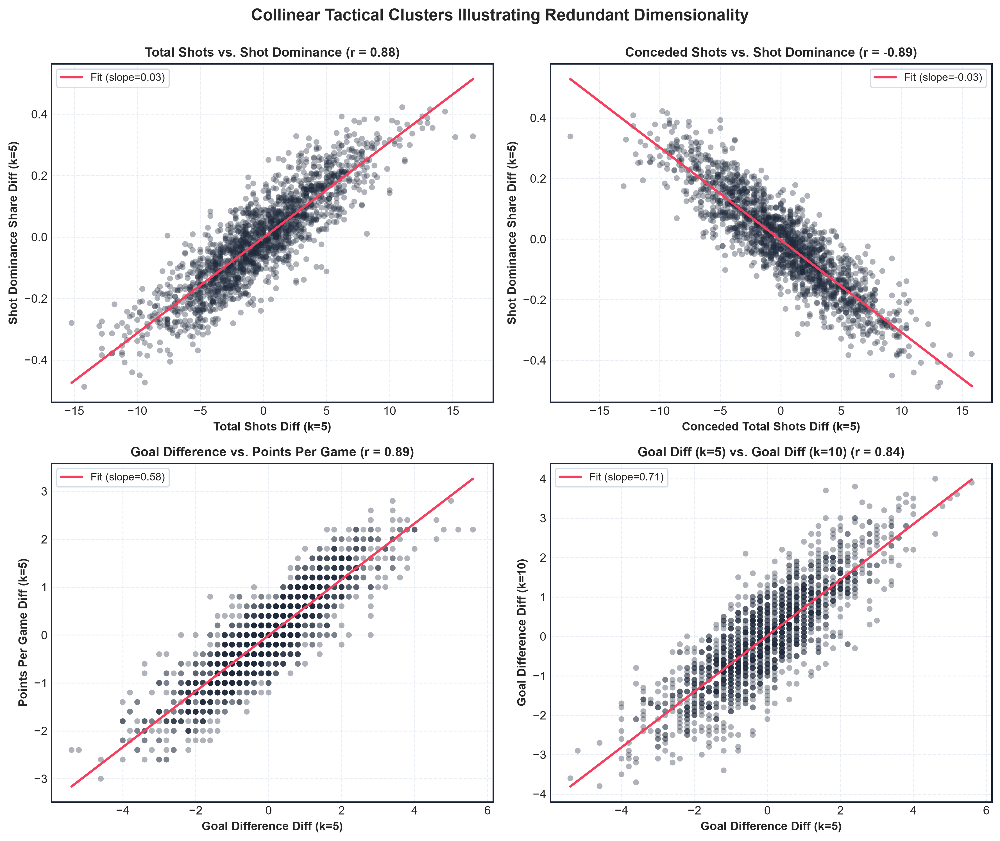
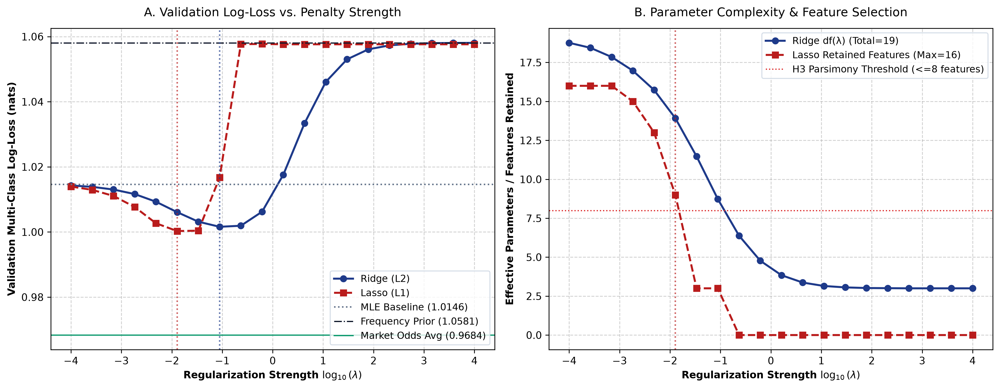
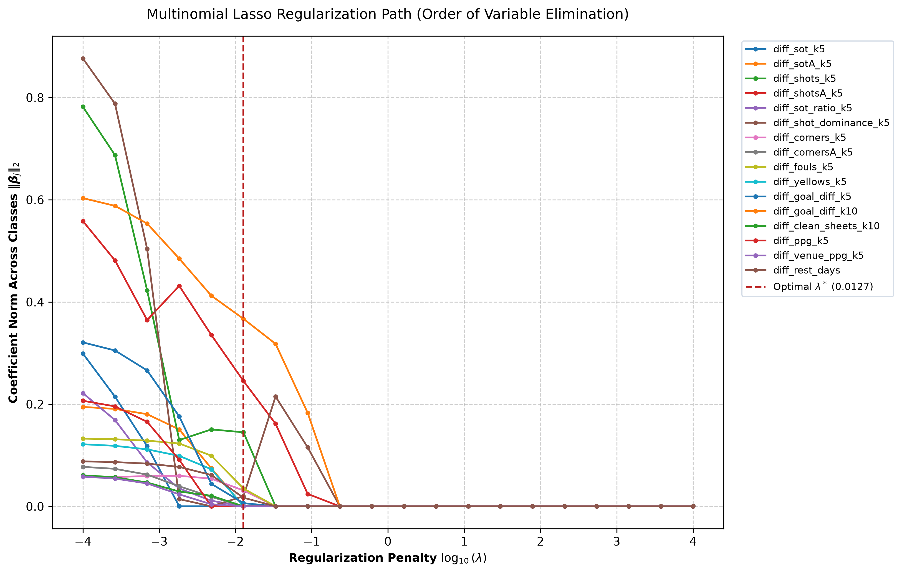
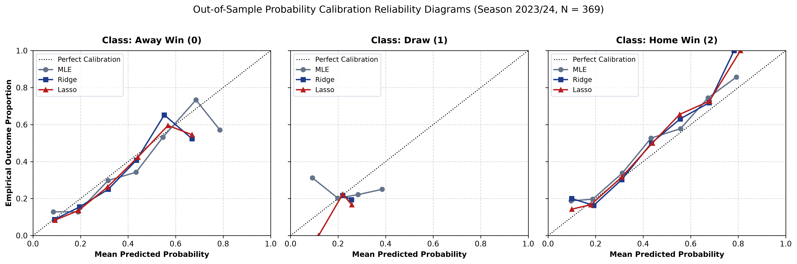
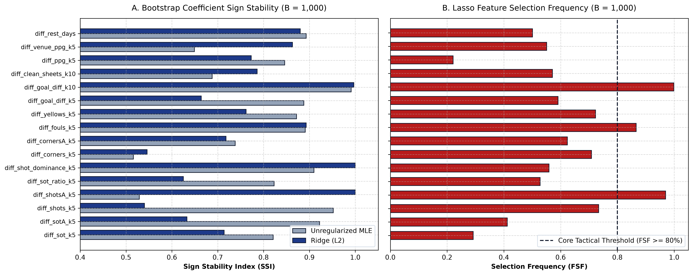

Target Outcome Proportions (K = 3)
Ground truth match outcome distribution on modelling-ready sample (N = 1,741)
Sample Breakdown Across Seasons
Comparison of modelling-ready fixtures vs. warm-up cold-start periods
2019/20 has 100 warm-up fixtures during initial Gameweeks 1–10. Promoted teams account for subsequent warm-up matches.
Core Research Hypotheses Under Evaluation
Theoretical rationale for comparing classical unregularized MLE against regularized Ridge and Lasso
| Hypothesis | Research Question | Expected Regularized Advantage | Statistical Verification Metric |
|---|---|---|---|
| H1: Out-of-Sample Loss | Do Ridge and Lasso achieve significantly lower out-of-sample log-loss than classical MLE? | Variance reduction through shrinkage prevents overconfidence on collinear noise. | Paired Wilcoxon signed-rank test on Gameweek log-loss (p < 0.05). |
| H2: Multicollinearity | How do Ridge and Lasso stabilize coefficient estimates when predictors correlate (|r| > 0.70)? | Ridge stabilizes the ill-conditioned Hessian; Lasso eliminates redundant predictors. | Bootstrap coefficient standard errors and Sign Stability Index (SSI). |
| H3: Tactical Parsimony | Can Lasso isolate a compact tactical subset without compromising predictive accuracy? | Exact L1 sparsity shrinks non-essential variables to exactly zero. | Feature Selection Frequency (FSF) and McNemar classification test. |
Publication-Ready Research Figures (300 DPI)
Generated in accordance with standard academic journal guidelines (Nature / Oxford style). Use these in your dissertation thesis or presentation slides.









Interactive Feature Distribution Explorer
Select any predictor below to inspect its frequency histogram, central moments, and dispersion.
Shots on Target Differential
Attack VolumeRolling 5-match differential in shots on target taken.
| Statistical Parameter | Measured Value | Interpretation |
|---|---|---|
| Sample Size (N) | 1,741 | 100% complete, 0 missing entries |
| Mean (μ) | -0.0829 | Centered near zero (symmetrical differential) |
| Standard Deviation (σ) | 1.9696 | Measure of inter-team tactical spread |
| Median (Q2) | 0.0000 | 50% of matches home team has advantage |
| Range [Min, Max] | [-7.80, +6.20] | Extremes between dominant vs. struggling clubs |
| Interquartile Range [Q1, Q3] | [-1.40, +1.20] | Central 50% spread of all fixtures |
Interactive Pearson Correlation Heatmap (16 × 16)
Hover over any cell to see exact correlation r between tactical dimensions.
Severe Collinear Pairs (|r| ≥ 0.65)
These pairs create severe variance inflation in unregularized MLE, demonstrating why Ridge and Lasso are required.
| Predictor A | Predictor B | Correlation Coefficient (r) | Collinearity Level | Impact on Classical MLE |
|---|
Warm-Up Period & Missingness Integrity Audit
Detailed breakdown of fixture status across all five Premier League seasons.
| Season | Total Matches | Modelling-Ready (k ≥ 10) | Warm-Up Excluded | Home Win % | Draw % | Away Win % | Missing Predictor Values |
|---|
Head-to-Head Matchup Form Inspector
Select any historical Premier League match to inspect which team held the statistical edge heading into kickoff.
Pre-Match Differential Vectors (ΔX = Home - Away)
1. Classical MLE
λ = 0Standard Maximum Likelihood Estimation without parameter penalties.
- Solves score equations: Xᵀ(y - p) = 0.
- Covariance estimated via exact Hessian inversion: H⁻¹ = (Xᵀ W X)⁻¹.
- Collinearity Flaw: Correlated variables make det(H) ≈ 0, leading to explosive variance and sign instability.
2. Ridge Regression (L2)
λ ∑ β_j²L2-regularized logistic regression with smooth quadratic penalty.
- Augments Hessian: (H + 2λI) > 0.
- Guarantees positive definiteness, completely resolving matrix singularity.
- Shrinkage Dynamics: Proportional uniform shrinkage; retains all 16 variables in the model.
3. Lasso Regression (L1)
λ ∑ |β_j|L1-regularized logistic regression with non-smooth absolute penalty.
- Subgradient condition creates sharp non-differentiable corners at β = 0.
- Optimized via coordinate descent / SAGA solver.
- Feature Selection: Shrinks redundant collinear coefficients exactly to zero, isolating the core tactical subset.